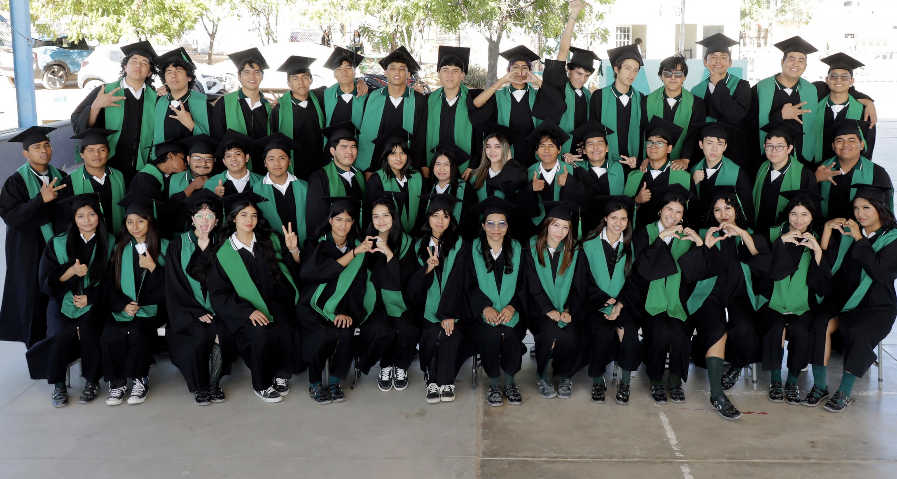
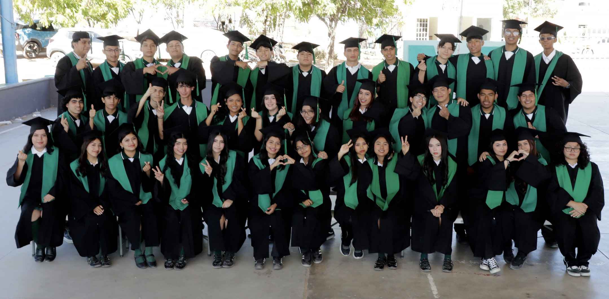
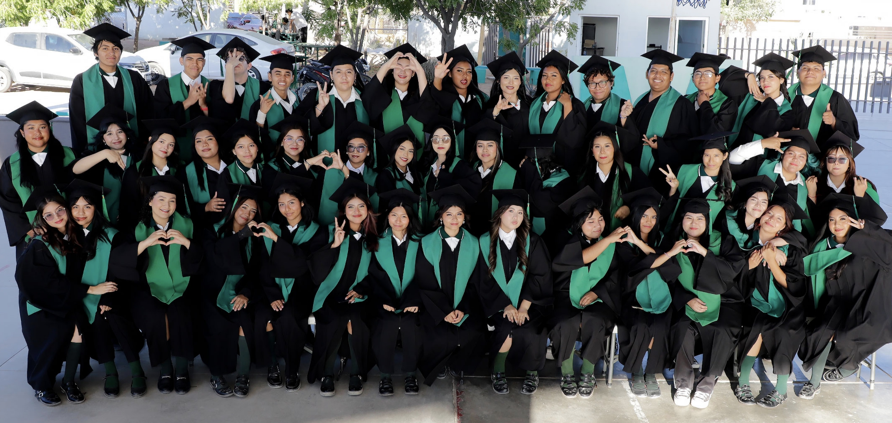

Colegio de Bachilleres · Plantel 10
Anuario Escolar 2023–2026
Generación que marca nuestra historia

Mtra. Anel Rosas Ruiz
COBACH Plantel 10Docente comprometida con la formación integral de los estudiantes.

Mtra. Consuelo Salazar Machada
COBACH Plantel 10Docente comprometida con la formación integral de los estudiantes.

Mtro. Daniel Alejandro Mekler
COBACH Plantel 10Docente comprometido con la formación integral de los estudiantes.

Mtro. Edgar Feliciano Cisneros Torres
COBACH Plantel 10Docente comprometido con la formación integral de los estudiantes.

Mtra. Guadalupe de Jesús Urías Vega
COBACH Plantel 10Docente comprometida con la formación integral de los estudiantes.

Mtro. Guillermo Rodríguez Canseco
COBACH Plantel 10Docente comprometido con la formación integral de los estudiantes.

Mtro. Humberto Ariel Cruz Juárez
COBACH Plantel 10Docente comprometido con la formación integral de los estudiantes.

Mtro. Jaime Reyes Chávez
COBACH Plantel 10Docente comprometido con la formación integral de los estudiantes.

Mtra. Jaqueline Castro Villanueva
COBACH Plantel 10Docente comprometida con la formación integral de los estudiantes.

Mtro. Jesús Emmanuel Caballo Caballero
COBACH Plantel 10Docente comprometido con la formación integral de los estudiantes.

Mtro. José Antonio Vega Gonzales
COBACH Plantel 10Docente comprometido con la formación integral de los estudiantes.

Mtro. Rafael Grajeda Rosas
COBACH Plantel 10Docente comprometido con la formación integral de los estudiantes.

Mtro. Ricardo Ramirez Samperio
COBACH Plantel 10Docente comprometido con la formación integral de los estudiantes.

Mtro. Sergio Báñales Garibaldi
COBACH Plantel 10Docente comprometido con la formación integral de los estudiantes.

📷 imagenes/anuario/grupos/grupoA.jpg'" />Grupo A

📷 imagenes/anuario/grupos/grupoB.jpg'" />Grupo B

📷 imagenes/anuario/grupos/grupoC.jpg'" />Grupo C
Selecciona un grupo para ver los perfiles · 45 alumnos por grupo
Cristopher Apolonio Díaz
Generación 2023–2026
Genesis Victoria Aragón Alemán
Cap: Informática / Naturales 05 / Marzo / 2008Mi COBACH
Asignatura favorita: Bioquímica
Yahel Guillermo Arce Valdez
Generación 2023–2026
David Carbajal Tacuba
Cap: Informática / Exactas 08 / Agosto / 2008Mi COBACH
Asignatura favorita: Análisis de fenómenos físicos y las clases de Samperio.
Anécdota: Accidentalmente quemé el laboratorio de química. ¿Sabías que el perro llamado "foca" era la mascota de la escuela?
Cristofer Alexander Castillo Antonio
Generación 2023–2026
Paola Mayte Guerrero González
Cap: Servicios Turísticos / Naturales 28 / 05 / 2008Mi COBACH
Experiencia: Le gusta materia de historia, mi paquete de naturales
Mis Metas

Samantha Anahí Guerrero Mayo
Cap: Servicios Turísticos / Sociales 07 / 10 / 2008Mi COBACH
Experiencia: Realizar prácticas con mi salón en la capacitación de Servicios Turísticos, o cuando el profesor de voleibol nos sacaba a calentar. Me ha gustado cada proyecto y trabajo que he compartido con mis compañeros, como la muestra gastronómica, la elaboración de onigiris, entre otros.
Mis Metas

Wilber Santiago Gutiérrez González
Cap: Informática / Sociales 11 / Mayo / 2008Mi COBACH
Asignatura favorita: Energía y sus interacciones (Pimentel) y las prácticas de laboratorio.
Mis Metas

Ana Maira Hernández Cirenio
Cap: Servicios Turísticos / Naturales 17 / 05 / 2008Mi COBACH
Experiencia: Conocer a Sebastián, y los días del estudiante
Mis Metas

América Ibáñez Villegas
Cap: Serv.Turistico / NaturalesMi COBACH
Experiencia: Org flujo de la materia de la materia. exp’ en el laboratorio
Mis Metas

Allison Monserrat Morales Sánchez
Generación 2023–2026Josué Jonathan Mozo García
Generación 2023–2026Estefania Nava Morales
Generación 2023–2026Edwin Daniel Orduña Parrazales
Generación 2023–2026Zuri Sadai Pérez Nava
Generación 2023–2026
Luis Manuel Valerio Dera
Cap: Informática / Exactas 29 / Junio / 2008Mi COBACH
Asignatura favorita: Informática.
Anécdota: Una vez me salté las clases y me reportaron… pasado de lanza.
Mis Metas

José Antonio Velázquez Barajas
Cap: Informática / Exactas 12 / Abril / 2008Mi COBACH
Asignatura favorita: Conservación de la energía — porque el profe Canseco es la leyenda.
Mis Metas

Aarón Villegas González
Cap: Informática / Exactas 08 / Abril / 2008Mi COBACH
Experiencia: Mi experiencia en COBACH fue buena en general. Con algunos obstáculos, sin embargo eso no detuvo mi propósito.
Mis Metas

Miguel Fernando Zarate Amador
Cap: Informática / Naturales 29 / Agosto / 2008Mi COBACH
Asignatura favorita: Historia.
Anécdota favorita: Cuando salí con mis amigos al monte.
Mis Metas
.jpeg)
Miliane Castro Armenta
Cap: Informática / Naturales 16 / 12 / 2007Mi COBACH
Experiencia: Canseco, Análisis de fenómenos físicos II como mi materia favorita
Mis Metas

Brayan Cruceño Sánchez
Cap: Informática / Naturales 31 / 10 / 2008Mi COBACH
Experiencia: Ninguna
Mis Metas

Jesús Emmanuel Cruz Luna
Cap: Informática / Exactas 24 / 12 / 2008Mis Metas

Rigoberto Cruz Rodríguez
Cap: Informática / Exactas 25 / 07 / 2008Mis Metas

Alexander De los Santos Rosales
Cap: Informática / Naturales 11 / 07 / 2008Mis Metas

Dulce Evelin Delgado Valle
Cap: Servicios Turísticos / Sociales 18 / 08 / 2008Mi COBACH
Experiencia: Cuando casi reprobamos con bojorquez
Mis Metas

Carlos Alejandro Díaz Medina
Cap: Informática / Exactas 16 / 04 / 2008Mi COBACH
Experiencia: En el estatal 3x3 mi compa tony invito a un morra al hotel y la morra nunca llego, nos quedamos con las ganas… Valentín se rajo…
Mis Metas

Carlos Abraham Díaz Suárez
Cap: Servicios Turísticos / NaturalesMi COBACH
Experiencia: ingles me gusta aprender el idioma y espero poder aprender el idioma
Mis Metas
.jpeg)
Irvin Daniel Díaz Ramírez
Cap: Informática / Exactas 31 / 03 / 2008Mi COBACH
Experiencia: Mi actividad favorita era cuando los profesores faltaban y usaba las horas libres para jugar videojuegos con mis compañeros también disfrutaba mucho salir con mis amigos después de clases, ya que siempre había risas y buenos momentos.
Mis Metas

Evelin Gómez Rojas
Cap: Informática / Naturales 15 / 11 / 2008Mi COBACH
Experiencia: "Física, por que me la pasó cotorreando con el profe Canseco" no me gusta hacer nada
Mis Metas

Ricardo Adonay Quintanilla Hernández
Cap: Informática / Sociales 04 / 12 / 2007Mis Metas

Cristofer Reséndiz Marroquín
Cap: Informática / Sociales 04 / 12 / 2007Mis Metas

César David Rojas García
Cap: Informática / Naturales 07 / 02 / 2008Mi COBACH
Experiencia: Informática y clases libres
Mis Metas

Elcy Cristina Severiano Cisneros
Cap: Informática / Exactas 27 / 10 / 2008Mis Metas

Yessica Idahi Solano Hernández
Cap: Informática / Sociales 15 / 08 / 2008Mis Metas

Ramsés Oziel Suárez Casimiro
Cap: Informática / Exactas 30 / 04 / 2008Mi COBACH
Experiencia: Me gustan las Matemáticas, se me rompió el pantalón y me gusta platicar con mis amigos
Mis Metas

Yesica Tolentino Chautla
Cap: Servicios Turísticos / ExactasMi COBACH
Experiencia: Jugar con los compañeros y la forma de enseñar del profe Couto fueron las cosas que mas me gustaron de cobach
Mis Metas

Robin Edahí Valencia Morales
Cap: Servicios Turísticos / Exactas 27 / 09 / 2008Mi COBACH
Experiencia: Mayormente positivo y eh aprendido mucho fuera y dentro del aula además que contribuir en mi desarrollo personal además de ampliar mi panorama de lo que hare fuera del bachillerato
Mis Metas
.jpeg)
Citlali Valenzuela García
Cap: Informática / Sociales 18 / 11 / 2008Mis Metas

Randall Fabricio Valenzuela Montalvo
Cap: Informática / Exactas 12 / 12 / 2008Mi COBACH
Experiencia: Pensamiento matemático, se nos perdió el carro en el cobach, en cobach me gusta estar en cómputo y es una muy buena experiencia
Mis Metas
David Asael López Evaristo
Generación 2023–2026
José Sebastián Martínez González
Generación 2023–2026Juan Alberto Martínez Santiago
Generación 2023–2026Karla Elena Martínez Napoles
Generación 2023–2026
Valeria López Valle
Generación 2023–2026Jacob Levy Cariño Arellano
Generación 2023–2026Rosa Estefanía Carrillo Martínez
Generación 2023–2026Marlene Nathaly Castañeda Bernabé
Generación 2023–2026Iván Yael Castañeda Ramírez
Generación 2023–2026
Jacob Arturo Castro Corona
Cap: Servicios Turísticos / Sociales 14 / Enero / 2008Mi COBACH
Asignatura favorita: Derecho y sociedad — me ayudó a expandir mi visión sobre el mundo.
Momentos: Mis momentos más bonitos siempre serán al lado de mis amigos.
Mis Metas
Valentín Peralta Cano
Generación 2023–2026Damaris Giseth Ramírez Hernández
Generación 2023–2026
Evelyn Ruby Reyes Ortiz
Cap: Servicios Turísticos / Naturales 21 / Agosto / 2008Mi COBACH
Asignatura favorita: Análisis de fenómenos físicos.
Anécdota: Jugando voley con mis amigas se me bajó el pants y seguí jugando normal.
Mis Metas
Francisco Guadalupe Rodríguez Yáñez
Generación 2023–2026Erik Omar Ruiz Torres
Generación 2023–2026Nicole Catalán Zepahua
Generación 2023–2026Luz Bridget Crespo Ibarra
Generación 2023–2026Edwin Damasso Cruz Mejía
Generación 2023–2026Emily Giselle Damián Mendoza
Generación 2023–2026Edith Emily Flores Zenaido
Generación 2023–2026Bradley Galicia Lujan
Generación 2023–2026María Daniela Gámez Pérez
Generación 2023–2026Johana Neftalí García
Generación 2023–2026Liliana Yudith García Bustamante
Generación 2023–2026Luis Enrique García Campos
Generación 2023–2026Alicia García Cruz
Generación 2023–2026
Mario Zahir Gómez Fuentes
Cap: Turismo / Exactas 01 / 03 / 2008Mi COBACH
Experiencia: Mi actividad favorita era jugar básquetbol en la escuela con mis amigos
Mis Metas

Axel Uriel Hernández González
Generación 2023–2026Mis Metas

Dulce Johana Hesiquio Ríos
Cap: Turismo / Naturales 06 / 06 / 2008Mi COBACH
Experiencia: Análisis de fenómenos físicas, la semana del estudiante
Mis Metas
Dulce Elena Juárez Morales
Generación 2023–2026Noemi Sánchez Saldaña
Generación 2023–2026Ian Azhael Sandoval Ramos
Generación 2023–2026Cristopher Soriano Santos
Generación 2023–2026
Rigoberto Yael Armenta Rodriguez
Generación 2023–2026
Jesús Valentín Banda Vargas
Generación 2023–2026Lander Said Cajero Chávez
Generación 2023–2026Melanie Guadalupe Camargo Yocupicio
Generación 2023–2026
Jorge Alonso Cárdenas Valdez
Generación 2023–2026
Diego Leyva Almazán
Generación 2023–2026
Bryan Felipe Martínez Hernández
Generación 2023–2026
Nathan Paul Medina Geraldo
Generación 2023–2026
Santiago Medrano Soriano
Generación 2023–2026
Valeria Magdalena Payan Dominguez
Generación 2023–2026Jacquelin Abarca Lorenzo
Generación 2023–2026Sonny Willmar Abarca Solís
Generación 2023–2026Carolina Adame Adame
Generación 2023–2026Karen Viridiana Ángel Inés
Generación 2023–2026Doriela Angulo Zavala
Generación 2023–2026Angela Arellano Figueroa
Generación 2023–2026Jesús Uriel Bailón Vélez
Generación 2023–2026Luis Javier Balderas Dorantes
Generación 2023–2026Jamileth Bautista Hernández
Generación 2023–2026Dana Rebeca Cabal Hernández
Generación 2023–2026Luz Iveth Castro Ausencio
Generación 2023–2026Monserrat Chula Martínez
Generación 2023–2026Jasmín Itamar Cilio Domínguez
Generación 2023–2026Britany Esmeralda Cortes Santos
Generación 2023–2026Assul Cruz Alvarez
Generación 2023–2026Iris Sinahí Díaz Lara
Generación 2023–2026Lizeth Gabriela Evangelista Aquino
Generación 2023–2026Dulce Estrella Fernando Camacho
Generación 2023–2026Ambar Guadalupe Fricache Lozano
Generación 2023–2026Diana Estela García Hernández
Generación 2023–2026Angelín Herrera Escudero
Generación 2023–2026
Guadalupe Jiménez Rodríguez
Cap: Primeros Auxilios / Sociales 03 / Octubre / 2008Mi COBACH
Asignatura favorita: Historia.
Actividades favoritas: Los eventos escolares.
Mis Metas
Paula Jimena Justo de Jesús
Generación 2023–2026
Fernanda Martínez Olivera
Cap: Primeros Auxilios / Exactas 23 / Diciembre / 2008Mi COBACH
Experiencia: Las prácticas de capacitación han sido muy entretenidas y he aprendido mucho en cada una.
Mis Metas
Job Martínez Reyes
Generación 2023–2026Cesilia Saraí Martínez Sandoval
Generación 2023–2026Mónica Mora Acosta
Generación 2023–2026Juan David Moreno Casimiro
Generación 2023–2026Yandel Morga Ayala
Generación 2023–2026Daniela Lizeth Moyado López
Generación 2023–2026Paola Getsemaní Navarrete Cruz
Generación 2023–2026Katherine Rosmery Navarrete Cuautle
Generación 2023–2026
Sofía Ortega Martínez
Cap: Primeros Auxilios / Exactas 24 / Octubre / 2008Mi COBACH
Asignatura favorita: Signos vitales con el profe Aldo y la maestra Melissa.
Actividades favoritas: Prácticas de signos vitales e inyecciones.
Mis Metas
Karla Paredes Barrón
Generación 2023–2026Sara Noemí Pérez Nápoles
Generación 2023–2026Anyely Guadalupe Rábago Rábago
Cap: Primeros Auxilios / Naturales 12 / Enero / 2008Mi COBACH
Experiencia: Traumatismos y prácticas de primeros auxilios.
Mis Metas
Maite Estefani Rivera Flores
Generación 2023–2026Carlos Joel Rivera Soto
Generación 2023–2026Gabriela Rodríguez Tezoco
Generación 2023–2026Kaory Ventura Ramírez
Generación 2023–2026Nahomy Ventura Ramírez
Generación 2023–2026Irma Alejandra Verdugo Cantor
Generación 2023–2026Ángel Exahy Vizcarra Morales
Generación 2023–2026Romina Jetzibe Zapata Rivera
Generación 2023–2026Equipo docente y administrativo · Generación 2023–2026

Mtra. Anel Rosas Ruiz
DocenteComprometida con la formación integral de sus estudiantes.

Mtra. Consuelo Salazar Machada
DocenteComprometida con la formación integral de sus estudiantes.

Mtro. Daniel Alejandro Mekler
DocenteComprometido con la formación integral de sus estudiantes.

Mtra. Diana Gonzales David
DocenteComprometida con la formación integral de sus estudiantes.

Mtro. Edgar Feliciano Cisneros Torres
DocenteComprometido con la formación integral de sus estudiantes.

Mtro. Ezequiel Motoya Leal
DocenteComprometido con la formación integral de sus estudiantes.

Mtra. Guadalupe de Jesús Urías Vega
DocenteComprometida con la formación integral de sus estudiantes.

Mtro. Guillermo Rodríguez Canseco
DocenteComprometido con la formación integral de sus estudiantes.

Mtro. Humberto Ariel Cruz Juárez
DocenteComprometido con la formación integral de sus estudiantes.

Mtra. Irene Gutiérrez Montejano
Personal AdministrativoParte esencial del equipo que sostiene el funcionamiento del plantel.

Mtro. Isaac Reyes
DocenteComprometido con la formación integral de sus estudiantes.

Mtro. Jaime Reyes Chávez
DocenteComprometido con la formación integral de sus estudiantes.

Mtra. Jaqueline Castro Villanueva
DocenteComprometida con la formación integral de sus estudiantes.

Mtro. Jesús Bojórquez Loque
DocenteComprometido con la formación integral de sus estudiantes.

Mtro. Jesús Emmanuel Caballo Caballero
DocenteComprometido con la formación integral de sus estudiantes.

Mtro. José Antonio Vega Gonzales
DocenteComprometido con la formación integral de sus estudiantes.

Mtra. Lourdes Galadriel Figueroa Ceceña
Personal AdministrativoParte esencial del equipo que sostiene el funcionamiento del plantel.

Mtro. Mario Villavicencio Aguilar
DocenteComprometido con la formación integral de sus estudiantes.

Mtro. Rafael Grajeda Rosas
DocenteComprometido con la formación integral de sus estudiantes.

Mtra. Reina Rosalía Rojas Romero
Personal AdministrativoParte esencial del equipo que sostiene el funcionamiento del plantel.

Mtro. Ricardo Ramirez Samperio
DocenteComprometido con la formación integral de sus estudiantes.

Mtra. Samantha Moreno Estrada
Personal AdministrativoParte esencial del equipo que sostiene el funcionamiento del plantel.

Mtro. Sergio Báñales Garibaldi
DocenteComprometido con la formación integral de sus estudiantes.

Lic. Xiomara Gastelum Castro
Directora del PlantelDirectora del COBACH Plantel 10, Cabo San Lucas, Baja California Sur.